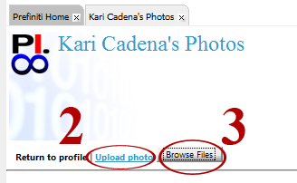
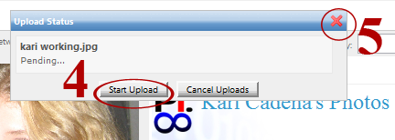
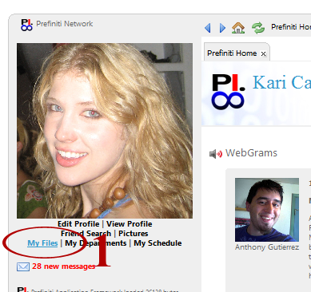
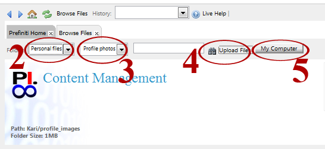
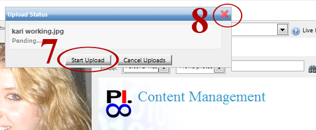

You can upload photos that will appear in your profile.
Note: If you want to upload company photos or images such as logos, select 'Profile photos' and refer to instructions 'Upload photo to Site Files.'
Click on 'Pictures' as shown in picture (step 1). A new 'Photos' tab will open.
Select 'Upload Photo' (step 2). Click 'Browse Files' (step 3).

Search for and select the photo you would like to upload. Click 'Start Upload' (Step 4). Close the 'Upload Status' box by clicking on the 'X' (step 5).

Click on 'My Files' as shown in picture (step 1). A new 'Browse Files' tab will open.

Select 'Personal files' from the drop down menu (step 2). Select 'Profile photos' (step 3). Click 'Upload Files' (step 4). Click 'My Computer' (step 5).

Search for and select the photo you would like to upload. Click 'Start Upload' (Step 6). Close the 'Upload Status' box by clicking on the 'X' (step 7).
